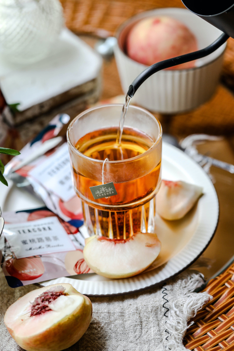

Peach Green Tea

Description
The refreshing and sweet flavour of peach pairs well with green tea, though you can also make this recipe using black tea.
Ingredients
- 1 Green tea teabag from a brand of your choice
- 1 cup of water for brewing tea
- 1/2 cup of water for peach puree
- 1/2 medium sized peach, peeled
- 3 tsp simple syrup
Steps
- Bring 1 cup of water to a boil for brewing tea and pour into a cup with teabag in it.
- Steep the tea for 4-6 minutes. Steep for longer if you'd like a stronger green tea taste.
- Remove teabag after steeping to your desired concentration.
- Puree the peach with 1/2 cup of water together.
- Strain the peach puree mixture through a fine mesh strainer to remove pulp.
- Combine tea, simple syrup, and peach puree together in a suitable glass and stir to combine.
Credits
Other Tea Recipes